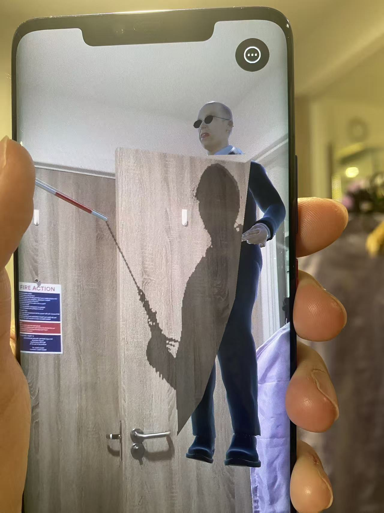

The Guided
Exploring the relationship between the autonomy of people with disabilities and accessible infrastructure.

Abstract / Artist Statement
In real life, some people offer assistance to visually impaired individuals without them explicitly requesting help—such as physically pulling them, guiding their direction, or making decisions on their behalf. Although these actions are often well-intentioned, for some visually impaired individuals, such unsolicited help can sometimes feel uncomfortable. Therefore, this project explores whether the public's "urge to help" is related to the lack of accessible infrastructure in public spaces.
To address this, the project develops an augmented reality (AR)-based interactive experience. Users scan an image to trigger virtual content and then experience, within the AR environment, the process of actively assisting a blind person while navigating. At the end of the experience, the initial act of helping is replaced by actual navigation aids designed for the visually impaired. The project aims to convey that, compared to temporary interventions by strangers, improving accessible navigation facilities in daily life may be more meaningful. It also hopes to use AR technology to encourage people to reconsider the relationship between helping behaviors, the autonomy of visually impaired individuals, and public accessibility infrastructure.
Contextual Review
In research on disability, a visually impaired YouTuber noted: "When strangers offer guidance or assistance without permission, it can make them feel uncomfortable" (Niu, Liu and Bian, 2024). This observation became the inspiration for this project. Rather than viewing helping behavior merely as an act of kindness, what truly matters may be establishing more comprehensive, sustainable, and accessible public infrastructure. Therefore, this project aims to use interactive experience to re-expose the social issues hidden behind acts of help, prompting reflection on the relationship between helping behaviors, autonomy, and accessibility in public spaces.
Based on this idea, I developed an augmented reality (AR) interactive experience. Users first encounter a blind character who is lost and unable to find their way within an AR environment. Then, by scanning images in the real world, a female helper is triggered and proactively takes the blind person’s arm to guide them. Users control the helper’s movement via their smartphone screen, simulating the process of actively assisting the blind individual. During interaction, the blind character expresses their desire not to receive help, highlighting how uninvited assistance can cause discomfort. At the end of the experience, the previously manual guidance is replaced by an accessible voice navigation system, emphasizing the importance of public navigation facilities for visually impaired individuals.
In recent years, research on accessible design has increasingly focused on the autonomy and independence of people with disabilities in public spaces. Kapsalis, Jaeger, and Hale (2022) argue that future accessible design in public spaces should prioritize inclusivity and autonomy, enabling people with disabilities to carry out activities independently. Meanwhile, AR technology has gradually been applied to social issues and public space experiences. Silva et al. (2022) suggest that AR can transcend limitations of traditional activism in the physical world, using immersive and layered narratives to bring previously invisible problems and perspectives back into view. However, most current research combining accessibility and AR primarily treats AR as an assistive tool, focusing on how it can improve daily life for people with disabilities, while rarely critically examining how helping behaviors affect the autonomy of visually impaired individuals, or how such behaviors relate to inadequate accessible infrastructure in public spaces. Thus, this project seeks to use AR interaction to reveal the hidden accessibility issues embedded in public spaces and encourage users to reconsider the autonomy of visually impaired people in urban environments.
This project holds significance because it brings to light accessibility issues often overlooked in everyday life, guiding users to pay attention to the autonomy of visually impaired individuals in public spaces. It conveys the message that what truly offers long-term support to people with disabilities may not just be momentary acts of goodwill between individuals, but rather the existence of well-developed and enduring accessible public infrastructure. At the same time, the project also invites deeper reflection on the tension between “care” and “control.”
Kapsalis, E., Jaeger, N. and Hale, J., 2024. Disabled-by-design: effects of inaccessible urban public spaces on users of mobility assistive devices–a systematic review. Disability and Rehabilitation: Assistive Technology, 19(3), pp.604–622. Available at: https://www.tandfonline.com/doi/full/10.1080/17483107.2022.2111723 (Accessed: 12 May 2026).
Niu, S., Liu, L. and Bian, Y., 2024. Please Understand My Disability: An Analysis of YouTubers' Discourse on Disability Challenges. Proceedings of the ACM on Human-Computer Interaction, 8(CSCW2), pp.1–25. Available at: https://dl.acm.org/doi/abs/10.1145/3686946 (Accessed: 12 May 2026).
Silva, R.M., Principe Cruz, E., Rosner, D.K., Kelly, D., Monroy-Hernández, A. and Liu, F., 2022, April. Understanding AR activism: An interview study with creators of augmented reality experiences for social change. In Proceedings of the 2022 CHI Conference on Human Factors in Computing Systems (pp. 1–15). Available at: https://dl.acm.org/doi/abs/10.1145/3491102.3517605 (Accessed: 12 May 2026).
Impact Statement
Ethical Considerations
In this project, users are guided through a psychological process of "active assistance – rejection – rethinking", which may cause temporary discomfort during the experience. To prevent users from remaining in a negative emotional state, the project includes accessible voice guidance at the end, aiming to transform users' sense of guilt into reflection on public accessibility issues. Additionally, the project is based on AR technology and requires scanning of the real space, thus involving privacy concerns in public spaces. In the design, the AR system does not perform facial recognition of pedestrians and does not collect, upload, or store any camera data to minimize the impact on users' and their surrounding environment's privacy. Moreover, the work does not portray visually impaired individuals as completely passive, vulnerable, or dependent on others, but rather emphasizes their need for autonomy in public spaces. Therefore, during the design process, overly dramatic or negative representations of the disabled community are avoided to reduce stereotypes about real-life disabled people.
Sustainability
The project adopts a lightweight AR deployment method based on "Image Triggers", which does not rely on expensive or fixed large-scale hardware devices. Users can complete the experience simply through ordinary smartphones, reducing the resource consumption caused by physical devices, material production, and transportation. This enables the work to be reused and displayed in different spaces, thereby enhancing the sustainability and dissemination of the project.
Accessibility
The project uses smartphones to present AR, allowing users to complete the experience with just a regular smartphone, lowering the equipment and usage threshold. Meanwhile, the project mainly relies on simple scanning and screen operations, reducing the impact of complex operations on the user experience. However, the project does not take into account the use by people with disabilities, thus having certain limitations for them. In the future, more voice feedback, tactile feedback, or multi-sensory interaction methods can be added to enhance the accessibility and participation experience for different user groups.